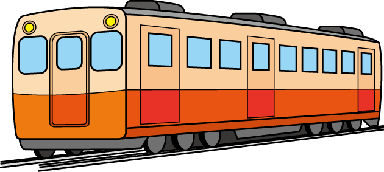
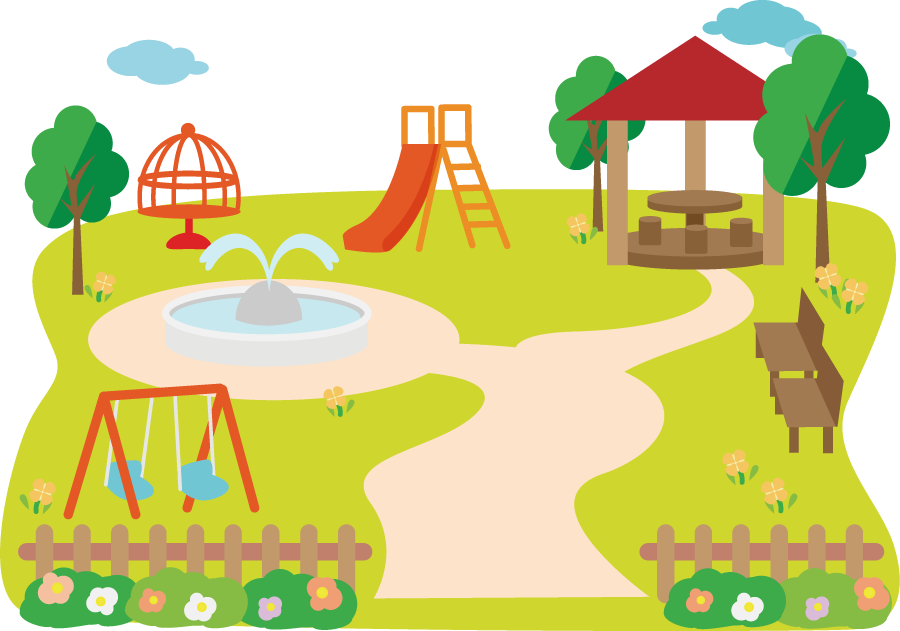
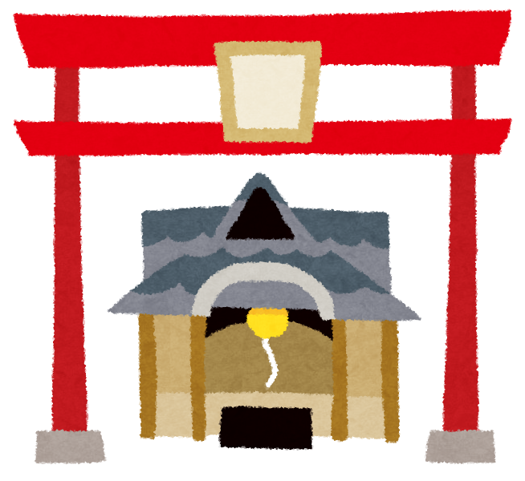

2.埼玉おすすめスポット
鉄道博物館

「鉄道」「歴史」「教育」をコンセプトに、日本における鉄道の役割、社会への影響が学べます。
クリックして詳細へ
菓子屋横丁
素朴で昔懐かしい味を今に伝える菓子作りの店が並び、一歩足を踏み入れると誰もが子供に帰ったような気分になってしまいます。
クリックして詳細へ
羊山公園

緑豊かな自然に囲まれた羊山公園は市街地を一望できる高台にあり、長年市民の憩いの場となっております。
クリックして詳細へ
喜多院

川越大師の別名で知られる。建物の多くが重要文化財に指定され、寺宝にも貴重な美術工芸品を多く有します。
クリックして詳細へ